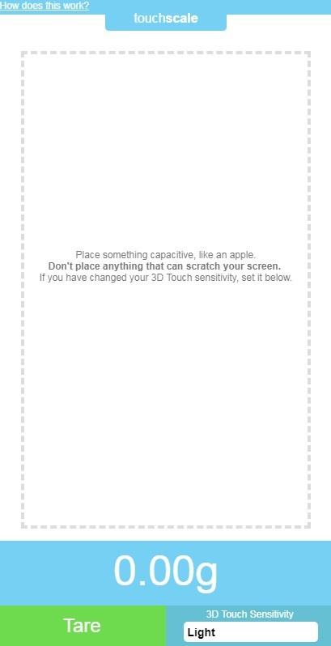
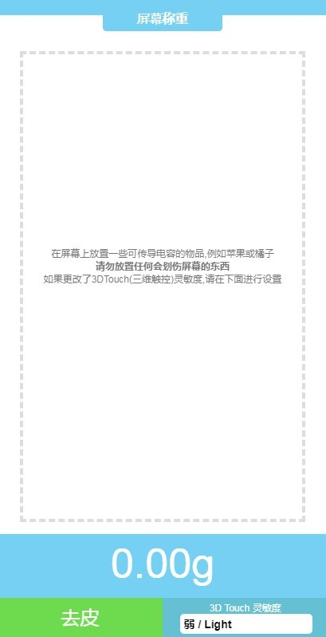

把 iPhone 当电子秤用？我折腾了三天 TouchScale
偶然发现手机居然能当秤用，出于好奇装了 TouchScale。从一开始读数乱跳到慢慢摸出规律，这篇是我三天下来的真实体验——值不值得装、怎么用才准、哪些设备根本跑不了，一次说清。
起因：就是想试试手机到底能不能当秤
上周帮朋友分装咖啡豆，一小袋要分成每份 20 克，翻遍家里找不到电子秤。正想下单买一个，突然想起之前刷到过一条短视频，说 iPhone 可以直接当秤用——就是这个 TouchScale。
说实话，第一反应是「这也太玄学了吧」。手机屏幕能感应触摸力度我知道，但要精确到克？这不是天方夜谭吗。不过反正网页版不用装 App，Safari 直接打开就能用，我决定试试看。
初印象：打开就傻眼了
在touchscale官网输入网址加载出来，第一眼界面倒是挺干净的——中间一个大圆圈提示把东西放上去，下方有灵敏度调节和去皮按钮。但紧接着旁边飘出一行红字：NOT SUPPORTED。
我那台是 iPhone 13 Pro。后来才搞明白，网页版依赖苹果的 3D Touch 硬件——只有 iPhone 6s 到 XS Max 那几代带实体压力传感器的机型才能跑。iPhone XR 之后苹果砍了 3D Touch 换成触感触控，网页版直接废掉。这不是什么 bug，是硬件门槛写死了。

好在还有一个正式版，用 AI 相机估算重量，任何 iOS 17.6 以上的设备都能从下载获取。我抱着试试看的心态装了。
实际用下来：精度取决于你有多会伺候它
第一个坑：读数永远在跳
把咖啡豆倒进一个小纸杯放到屏幕上，读数从 12g 跳到 18g 又掉回 14g，来回抖个不停。我以为这东西本来就是个噱头，差点卸载。
后来才摸出规律：放的方式不对。你不能把东西扔上去，冲击力会让传感器瞬间爆表，然后慢慢回落，这个过程要等好几秒才稳定。正确姿势是用手指捏着杯口，从屏幕上方 5 到 10 厘米处轻轻松开，让它自然落下。放好之后数两秒再看，基本就定住了。
还有一个细节容易忽略：放好之后手要完全离开屏幕，至少离 10 厘米以上。哪怕只是手掌的余光离得太近，电容传感器都能感应到，读数又开始飘。
第二个坑：不是所有东西都能称
这个让我有点意外。TouchScale 的 3D Touch 传感器需要电容传导材质才能工作——金属、水、潮湿的物体没问题，但干木头、泡沫、陶瓷表面干燥的话，读数会不稳定甚至读不出来。
我试过直接放一颗干咖啡豆，读数在 1g 到 5g 之间乱跳。后来在杯子里先放一枚一元硬币去皮，再把咖啡豆放硬币上，读数立刻就稳了。这个小技巧救了我好几次。
第三个坑：桌面不能动
这点我之前完全没在意。第一天在办公桌上称，旁边同事一直在走来走去，读数永远在飘。后来换到厨房的大理石台面上，明显稳定了很多。touchscale文档里说的没错——越硬越平越稳的表面越好，放在膝盖上、软沙发上那根本就是浪费时间。

AI 相机版：换一种玩法
3D Touch 网页版确实折腾，但 App Store 的 AI 相机版换了个思路——拍照估算。打开相机对着物体拍一张，它根据体积和密度模型算重量。
精度说实话不如硬件版，但胜在没有设备门槛，什么手机都能用，而且不怕振动、不怕材质。拍个咖啡豆袋子，估算出来和实际重量大概差个 10% 到 15%，够用就行。适合那种临时想知道大概重量、又不想折腾硬件设置的人。
适合谁，不适合谁
适合的场景其实挺窄的：手上正好有一台 iPhone 6s 到 XS Max 的旧机型、临时需要称个几十克以内的小东西、不想专门买电子秤的人。比如分咖啡豆、称茶叶、按配方放调料这些，够用。
不适合的就多了：需要精确称重的（烘焙、实验）、手上设备不支持 3D Touch 的、嫌折腾的——老老实实买个电子秤，几十块钱，精度和稳定性完爆任何手机方案。
说实话，它的本质就是个「能用就好的辅助工具」，不是什么黑科技。苹果设计 3D Touch 本来就是为了检测轻按和重按两档力度，从来没想过把它当秤用。你非要让它干这事，就得学会伺候它——轻放、等两秒、放中央、桌面稳、手要远。把这些条件都满足了，精度能到 ±2g 左右，日常凑合用。
最后的建议
如果你正好有台老 iPhone 想玩点新鲜的，可以去试试网页版。官网直接打开就行，不用装 App。但别抱太高期待，它能帮你应急，替不了真正的秤。称重要玩得转，还是得先花半小时把那些注意事项摸清楚，不然只会觉得这东西是个骗子。
怕哪天官网镜像挂了找不到完整说明，我顺手把整理好的资料同步在了GitHub、Gitee和GitCode上，国内网络访问哪个顺手用哪个。